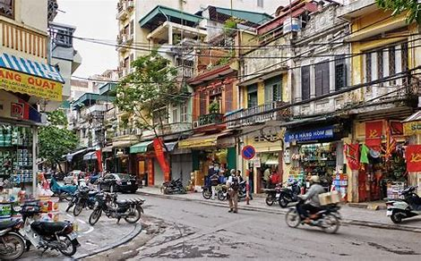

North Vietnam
North Vietnam is famous for its impressive Mountains and its busy Capitol Hanoi
Hanoi
The Capitol of Vietnam. Its very busy and so rich of culture. If you really want to feel the heartbeat of Vietnam, this is the Place to go


- Visit Womens Museum
- Waterpuppets theater
- go out on beer street
- walk around Hoan-Kiem-Lake
- stroll around the streets and visit the nice Cafes
- try egg Coffee
Ha Giang
In the Countryside of Vietnam, almost at the border to China, youll find this tresure of a place
- Ha Giang Loop-Rent a Tour or a motorbike by yourself and take yourself an a three day adventure through the beautiful nature of Vietnam
- drink Happy Water with the locals-youll regret it but its an experience